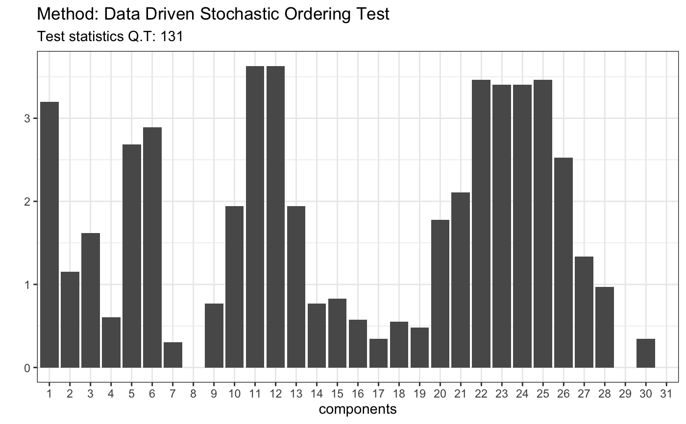
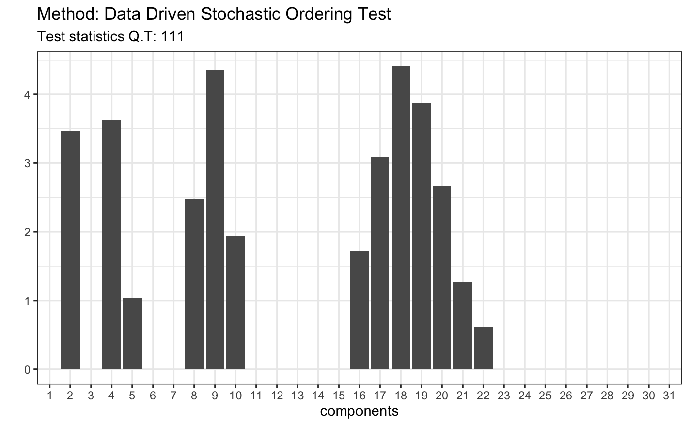
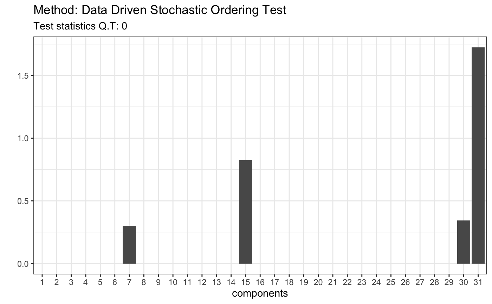

ddst.stochasticorder.test.RdPerforms the data driven smooth test for detection of the stochastic ordering, as described in detail in Ledwina and Wyłupek (2012). Suppose that we have random samples from two distributions F and G. The null hypothesis is that F(x) >= G(x) for all x while the alternative is that at F(x) < G(x) for some x. Detailed description of the test statistic is provided in Ledwina and Wylupek (2012).
ddst.stochasticorder.test(x, y, t = 2.2, d = 4)
| x | a (non-empty) numeric vector of data values |
|---|---|
| y | a (non-empty) numeric vector of data values |
| t | a positive number, penalty for model selection rule, see package description |
| d | an integer, number of coordinates that measure potential deviation from null hypothesis |
| ... | further arguments |
Nonparametric tests for stochastic ordering. Ledwina and Wyłupek (2012) https://doi.org/10.1007/s11749-011-0278-7
#> Warning: package ‘rmutil’ was built under R version 3.5.2# 1. Pareto(1)/Pareto(1.5) #uzyc parametrow z tabeli 3, p. 742, np dla m = n = 50, x <- rpareto(50, 2, 2) y <- rpareto(50, 1.5, 1.5) t <- ddst.stochasticorder.test(x, y) t#> #> Data Driven Stochastic Ordering Test #> #> data: #> Q.T = 130.93, T = 5 #>plot(t)# 2. Laplace(0,1)/Laplace(1,25) x <- rlaplace(50, 0, 1) y <- rlaplace(50, 1, 25) t <- ddst.stochasticorder.test(x, y) t#> #> Data Driven Stochastic Ordering Test #> #> data: #> Q.T = 111.11, T = 5 #>plot(t)# 3. LN(0.85,0.6)/LN(1.2,0.2) x <- rlnorm(50, 0.85, 0.6) y <- rlnorm(50, 1.2, 0.2) t <- ddst.stochasticorder.test(x, y) t#> #> Data Driven Stochastic Ordering Test #> #> data: #> Q.T = 0, T = 1 #>plot(t)